Segurança do Trabalho
PGR, LTCAT, PPP, eSocial SST, AET, CIPA, SIPAT, DDS e treinamentos.
Carregando portal técnico...
Laudos, perícias, vistorias, segurança do trabalho, engenharia civil, pavimentação, saneamento e controle tecnológico.
Eng. Christian Guerem
CREA-PR 200142/D
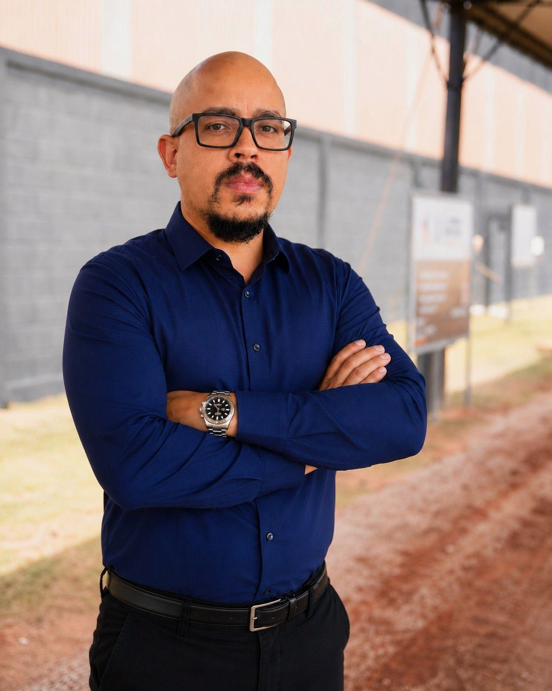
Um canal direto para solicitar atendimento técnico, conhecer serviços e visualizar a experiência prática da Renderização em obras, inspeções, ensaios e segurança do trabalho.
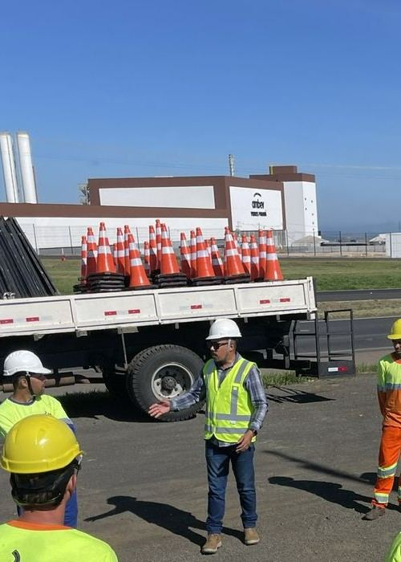
PGR, LTCAT, PPP, eSocial SST, AET, CIPA, SIPAT, DDS e treinamentos.
Vistorias, inspeções prediais, patologias construtivas, pareceres, pavimentação e saneamento.
Perícia trabalhista, engenharia civil, assistência técnica judicial e extrajudicial.
Coletas, verificações em campo, controle de execução e apoio técnico para obras.
Registros reais de atuação em campo, obras, ensaios, vistorias e segurança.
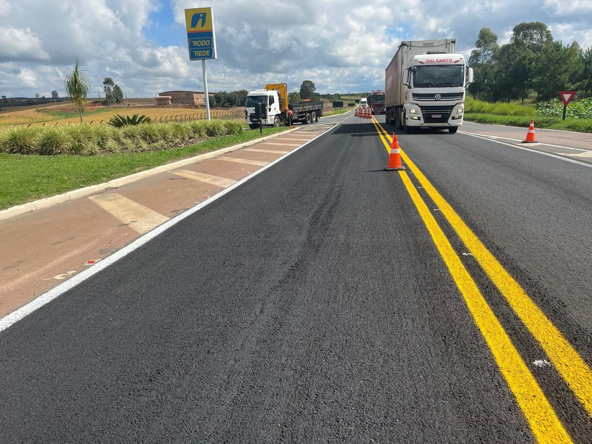
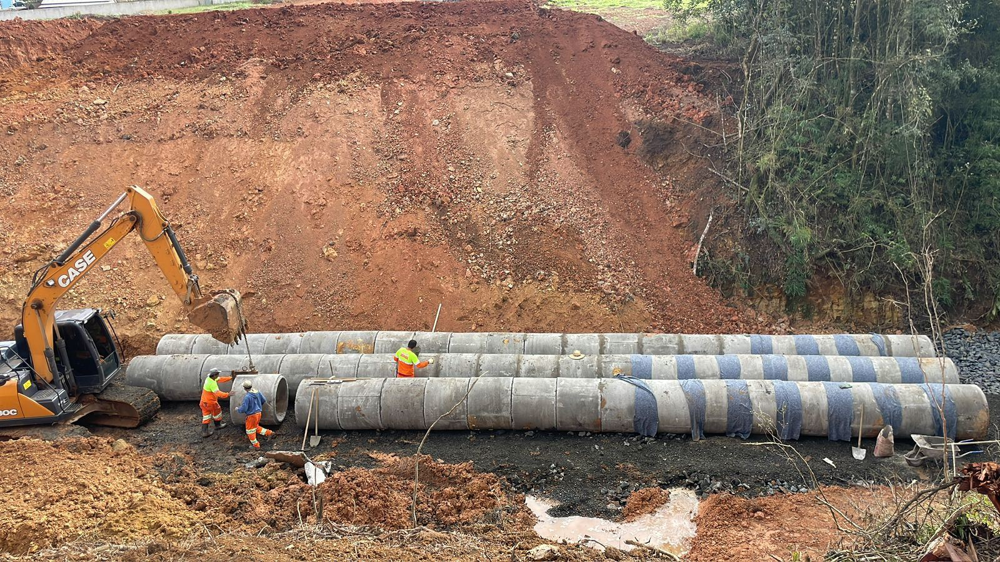
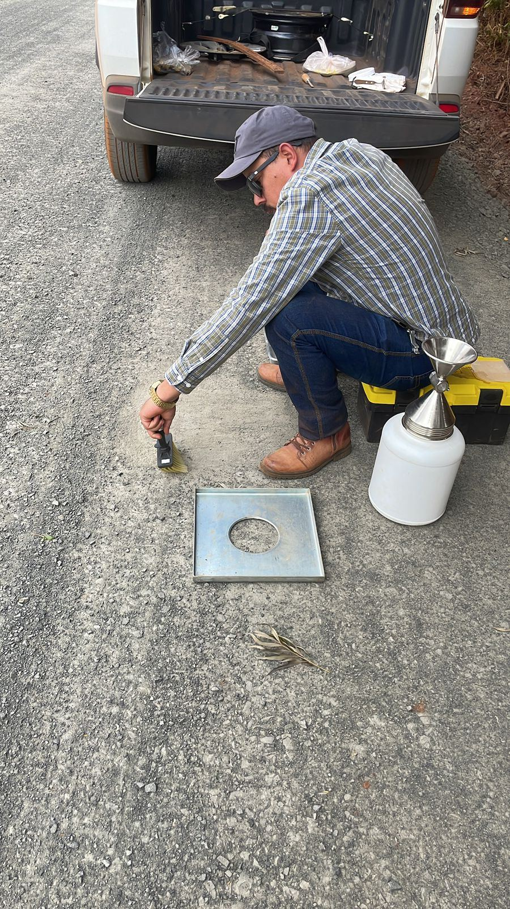
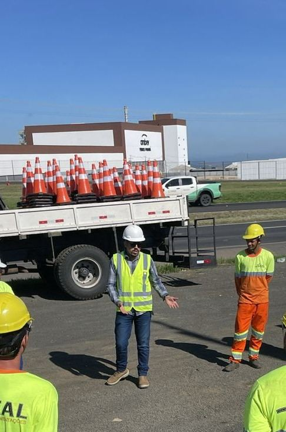
Decisão por achismo
Documentação frágil
Multas e passivos
Retrabalho e insegurança
Critério técnico
Documentação organizada
Responsável técnico identificado
ART quando aplicável
Fotos reais selecionadas para demonstrar experiência de campo.
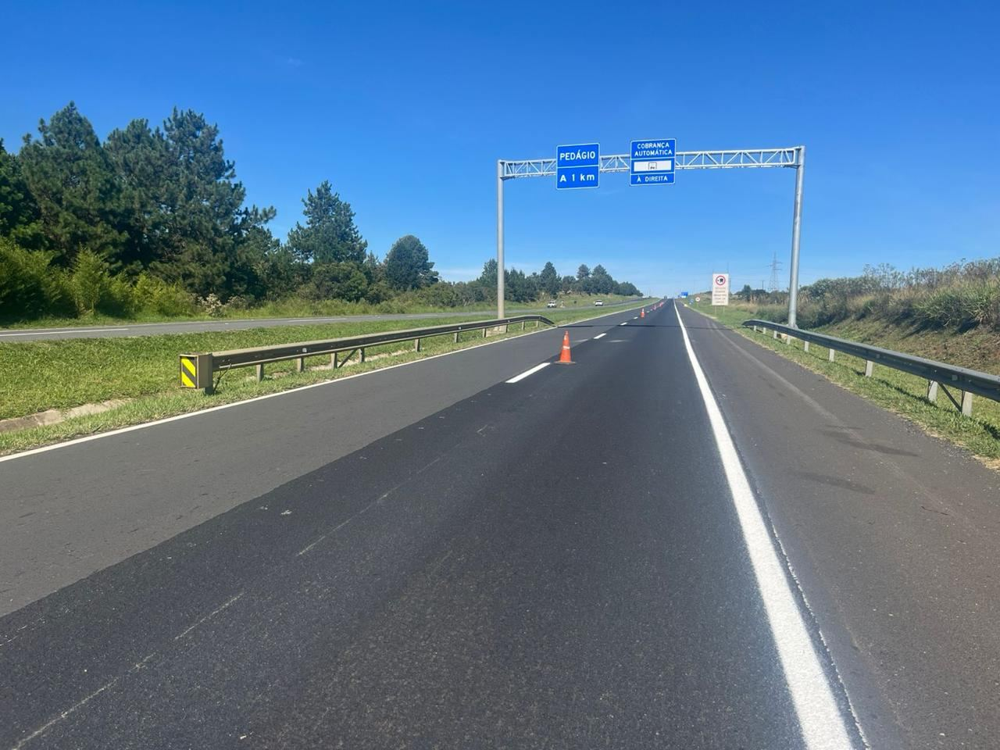
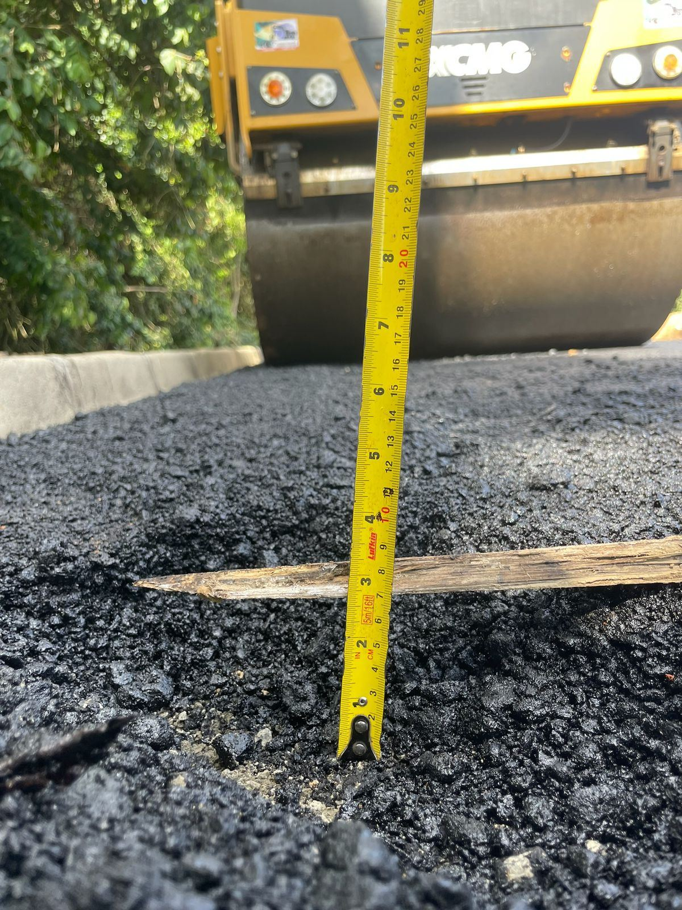
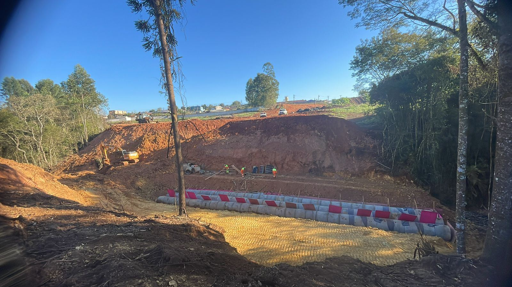
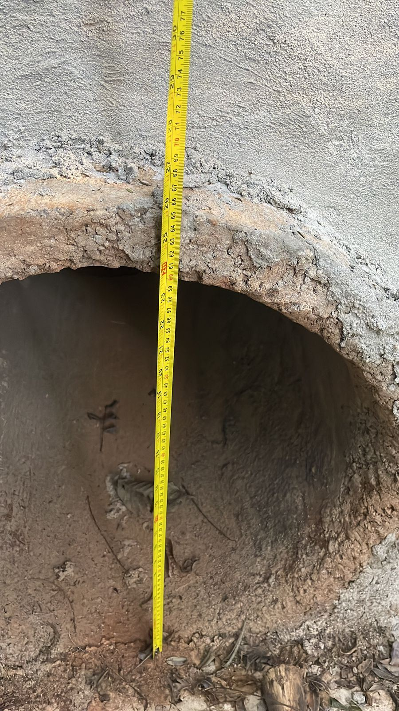
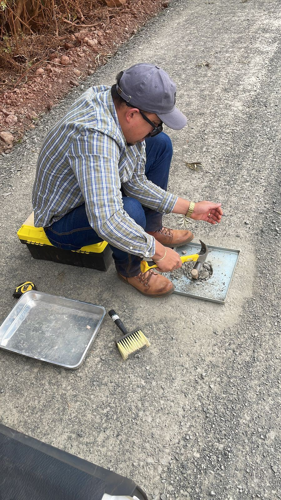
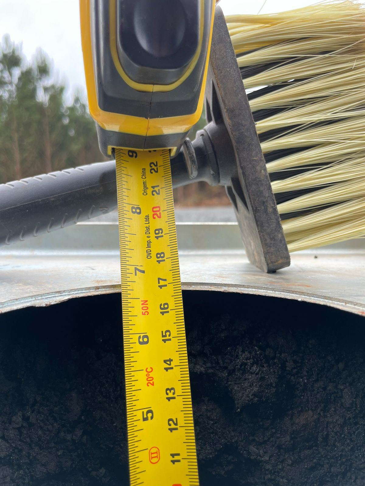
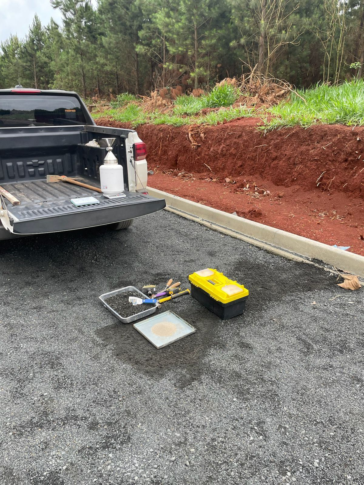
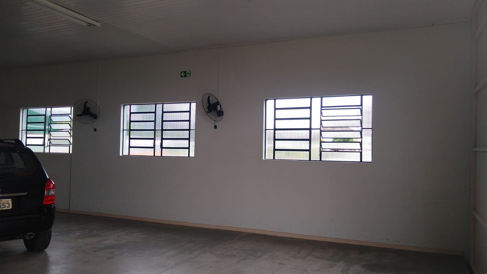
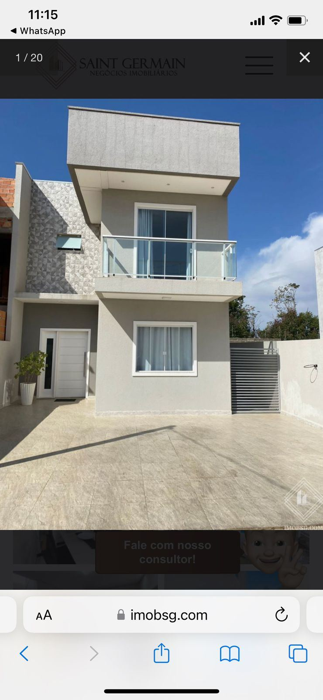
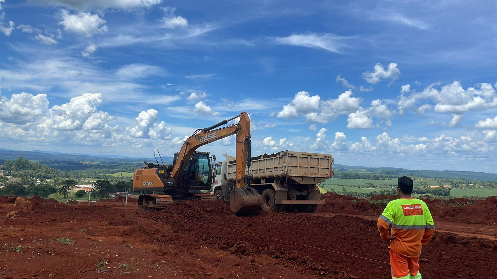
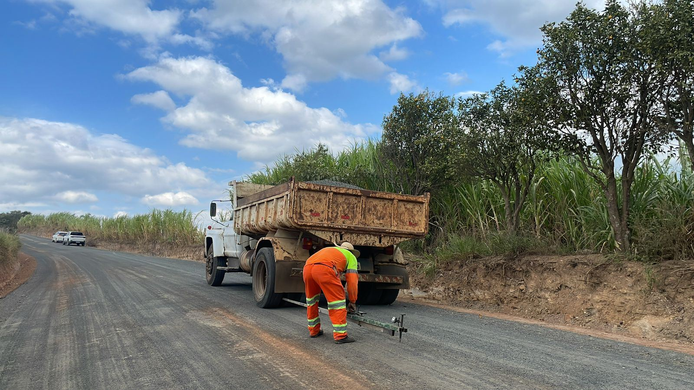
Preencha os campos e envie uma mensagem pronta pelo WhatsApp.
Cada empresa possui características diferentes. O orçamento é personalizado conforme atividade, riscos, local e escopo.
Sim, quando aplicável ao serviço técnico contratado.
Sim. Atendemos desde pequenas empresas até demandas maiores, conforme escopo técnico.
Sim, atuamos com perícias e assistência técnica judicial/extrajudicial.
Não. Atendemos Ponta Grossa e região, conforme disponibilidade.
Base em Ponta Grossa – PR, com atendimento técnico regional.
📍 Abrir no Google Maps📍 Ponta Grossa – PR e região
📲 (42) 99906-0610
✉️ contato@renderengenharia.com.br
📸 @christianguerem
🌐 renderengenharia.com.br